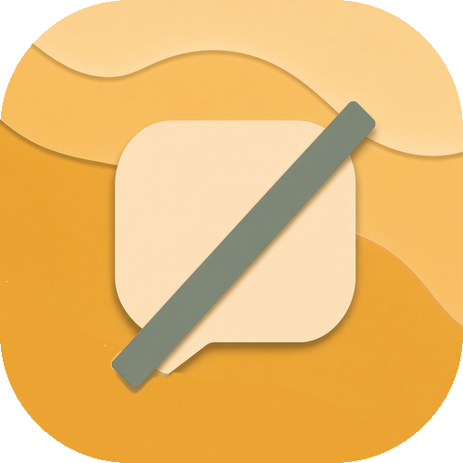
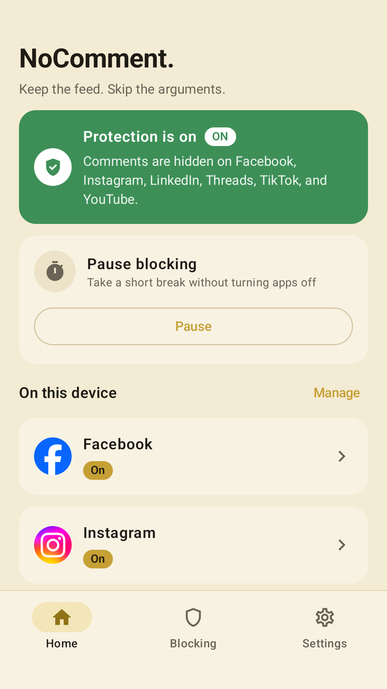
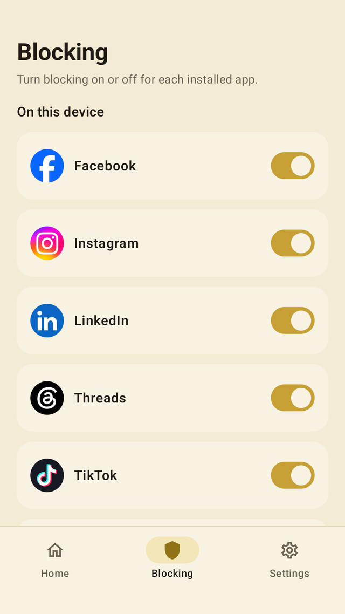
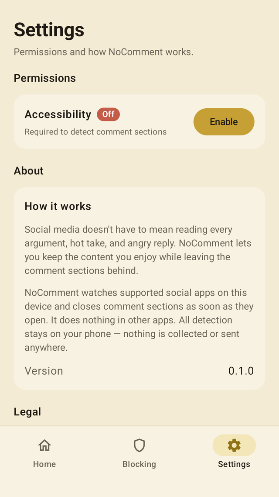

01
You pick the apps
Choose which installed apps to block. You can pause it for a minute or five when you actually want the comments.

NoComment.Android
Social apps don’t just show comments. They push the argumentative and offensive ones up, because a spike of anger holds you longer than the post did. NoComment closes those sections, so you can watch, read, and scroll without getting pulled into arguments.
Only these apps. NoComment does not look at anything else on your phone.



You opened the app for a video, a photo, a post. The comment sheet is waiting because a fight keeps you on the screen. Replies that offend you get lifted. Calm ones sink. A lot of what reaches the top is bots and strangers, ranked to provoke you, going nowhere.
You still get the thing you came for. You don’t spend the next twenty minutes answering someone, or something, that gives you nothing back.
You turn on an Android Accessibility service. NoComment uses it for one job: notice an open comment section, then close it.
01
Choose which installed apps to block. You can pause it for a minute or five when you actually want the comments.
02
The service looks at view IDs and visible text in those apps, only long enough to tell that comments are open.
03
That screen content stays in memory on the device. It is not stored, logged, or sent anywhere.
NoComment Android app
Last updated 26 October 2026
This policy describes how the NoComment app (“NoComment”) handles information on your device. It is the public copy of the policy shown inside the app. Contact support@nocommentapp.io with questions.
NoComment stores only the settings you choose on this device: which supported apps have blocking turned on, and whether blocking is temporarily paused. Those settings stay in local app storage. NoComment does not create an account.
If Android backup is turned on for the phone, Android may include that local storage in your personal device backup. NoComment does not receive that backup.
If you turn on the NoComment Accessibility service, the app reads the on-screen layout of Instagram, Facebook, Threads, YouTube, TikTok, and LinkedIn (view IDs and visible text) to detect comment sections. When a comment section is open in an app you have enabled, NoComment presses Back to close it.
That screen content is processed in memory on this device. It is not stored, logged, or sent anywhere. NoComment does not look at other apps. It does not type, tap other controls, or change system settings.
NoComment does not use the internet, analytics, advertising, crash reporting, or third-party trackers. It does not collect:
NoComment does not share, sell, or transmit your information to anyone, including advertisers. If you contact support by email, that conversation is handled in your email app, not inside NoComment.
You can refuse Accessibility access and still open the app. You can turn the service off in Android Settings → Accessibility, pause blocking from Home, or uninstall NoComment to delete local settings.
NoComment is not directed at children under 13, and we do not knowingly collect personal information from children.
If this policy changes, the updated text will be posted on this page and in the app, with a new “last updated” date.